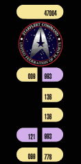
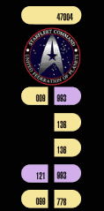

XBOX DIRECTORY STRUCTURE
This is a sample directory listing of the
contents of the Main Boot prartition C:.
Use this for reference to see if you are missing files, or accidentally
erased files
or folders and Xbox is not running the stock Dashboard, or booting
properly
with the Mod Chip OFF
 File
Structure & Types:- This explains the
file types (extensions) and any header information.
File
Structure & Types:- This explains the
file types (extensions) and any header information.
EvoX Additions
EvoX Backup Files

File
Structure & Types:- This explains the
file types (extensions) and any header information.
EvoX Additions
FOLDERS, SUBFOLDERS then FILES
- No specific order
DRIVE C: - Boot Drive -
Unaltered
ROOT
C:
SUMMARY:
C:\audio\*.*
C:\xodash\*.*
C:\xboxdashdata.185ead00\*.*
C:\fonts\*.*
C:\xboxdash.xbe
C:\XBox Book.xtf
C:\Xbox.xtf
DIRECTORY TREE:
C:
\xboxdash.xbe
[Stock
Microsoft Dashboard (M$D)]
\XBox Book.xtf ===> FONT FILE Can Be in FONTS Directory
[Newer
Xbox
Versions]
\XBox.xtf
===> FONT FILE Can
Be in
FONTS Directory [Newer Xbox Versions]
\audio
\MusicAudio
\Games
Info Screen In.wav
\Games
Info Screen In MSurr.wav
\Games
Info Screen Out.wav
\Games
Info Screen Out MSurr.wav
\Music
CD Select.wav
\MainAudio
\Global Delete_Destroy.wav
\Global B Button Back.wav
\Global A Button Select.wav
\Global
Completion Beep.wav
\Global Main MenuBack3ver2.wav
\Global
Keyboard Stroke 1.wav
\Global Error Message B.wav
\Global Keyboard Stroke 2.wav
\Global Progress Bar.wav
\Global Main MenuFwd3ver2.wav
\Global
Scroll Beep.wav
\AmbientAudio [These are the sounds you hear when
Xbox is on, and just sitting at the dashboard]
\AMB_EC_Voices13.wav
\AMB_EC_Steam4.wav
\AMB_EC_Pinger1.wav
\AMB_06_COMMUNICATION_LR.wav
\AMB_05_ENGINEROOM_LR.wav
\AMB_12_HYDROTHUNDER_LR.wav
\AMB_EC_Steam2.wav
\AMB_EC_Steam1.wav
\AMB_EC_Steam3.wav
\AMB_EC_Voices1.wav
\AMB_EC_Steam6.wav
\AMB_EC_Steam5.wav
\AMB_EC_Steam7.wav
\AMB_EC_Voices11.wav
\AMB_EC_Voices10.wav
\AMB_EC_Voices12.wav
\AMB_EC_Voices9.wav
\AMB_EC_Voices5.wav
\AMB_EC_Voices3.wav
\AMB_EC_Voices2.wav
\AMB_EC_Voices4.wav
\AMB_EC_Voices7.wav
\AMB_EC_Voices6.wav
\AMB_EC_Voices8.wav
\comm
voice 4.wav
\comm
static 4.wav
\comm
static 2.wav
\comm
static 1.wav
\comm
static 3.wav
\comm
voice 2.wav
\comm
voice 1.wav
\comm
voice 3.wav
\comm
voice 8.wav
\comm
voice 6.wav
\comm
voice 5.wav
\comm
voice 7.wav
\Control Room Loop
ver2.wav
\comm
voice 9.wav
\Control Room
Loop.wav
\MemoryAudio
\Memory
Games Select.wav
\Memory Controller Select.wav
\Memory Memory
Slot Select.wav
\SettingsAudio
\Settings
Lang SubMenu Sel.wav
\Settings Parent SubMenu Sel.wav
\TransitionAudio
\Music
Select Track Out_LR.wav
\Games
Sub Menu Out_LR.wav
\Games
Main Menu Out_LR.wav
\Games
Main Menu In_LR.wav
\Games
Sub Menu In_LR.wav
\Music
Main Menu Out_LR.wav
\Music
Main Menu In_LR.wav
\Music
Select Track In_LR.wav
\Settings Main
Menu Out_LR.wav
\Settings Main
Menu In_LR.wav
\Settings Sub Menu In_LR.wav
\Settings Sub
Menu Out_LR.wav
\xodash
\update.xbe
\xonlinedash.xbe
\audio
\livenowaudio
\friend online.wav
\friend offline.wav
\friend request.wav
\game
invite.wav
\voicechataudio
\voice
chat join.wav
\voice
chat leave.wav
\media
\xbg
\gen_dob_tumblers.xbg
\act_passcode.xbg
\act_copy_delete.xbg
\act_admin_policy.xbg
\act_accountpin.xbg
\3_doublebutton.xbg
\act_activation.xbg
\act_billing.xbg
\act_alt_names.xbg
\act_congrats.xbg
\act_message_server.xbg
\act_forced_name.xbg
\act_country.xbg
\act_id.xbg
\act_online.xbg
\act_new_opt_in.xbg
\act_overwrite.xbg
\anim_connecting.xbg
\7
act_sure.xbg
\act_state.xbg
\act_restrictions.xbg
\act_sub_3button.xbg
\act_user_options.xbg
\act_users2.xbg
\addfriend.xbg
\cellwall.xbg
\backbutton.xbg
\anim_wait_5.xbg
\bud_actions.xbg
\feedback.xbg
\contextual.xbg
\friends.xbg
\k_keyboard.xbg
\j_candidates.xbg
\gen_large_panel.xbg
\gen_exp_tumblers.xbg
\gen_mess_panel.xbg
\keyboard.xbg
\j_keyboard.xbg
\
keypad.xbg
\nts_status.xbg
\nts_ip.xbg
\nts_dns.xbg
\nts_settings.xbg
\t_keyboard.xbg
\orb_master.xbg
\nts_wireless.xbg
\selectbutton.xbg
\voicechat.xbg
\voicemail.xbg
\content
\savedgame
\titleimage.xbx
\saveimage.xbx
\titlemeta.xbx
\japanese
\ximejpm.dic
\coc_jpn.txt
\ximejps.dic
\tchinese
\twroc.dic
\xbx
\panel10.xbx
\highlight.xbx
\disabled.xbx
\cellwall.xbx
\button.xbx
\darken_opacity.xbx
\footer.xbx
\disabled_highlight.xbx
\gamehilite_01.xbx
\live_highlight_disabled.xbx
\livechrome.xbx
\keyboard_alpha.xbx
\live_header.xbx
\options.xbx
\mess_panel_backing.xbx
\panel1.xbx
\panel7.xbx
\panel18.xbx
\panel14.xbx
\panel12.xbx
\panel11.xbx
\panel13.xbx
\panel16.xbx
\panel15.xbx
\panel17.xbx
\panel3.xbx
\panel2.xbx
\panel19.xbx
\panel20.xbx
\panel5.xbx
\panel4.xbx
\panel6.xbx
\pulse1.xbx
\panel9.xbx
\panel8.xbx
\plain_header.xbx
\xbox2.xbx
\ridges.xbx
\pulse_3d_64_matte_trans.xbx
\wireframe.xbx
\xboxlogo.xbx
\xbox4.xbx
\xboxlogow.xbx
\xboxdashdata.185ead00 [Contains most of
your setup routines]
\settings_adoc.xip
\memory2.xip
\jkeyboard.xip
\default.xip
\accountselection.xip
\dvd.xip
\livetoday.xip
\keyboard.xip
\mainmenu5.xip
\music_copy3.xip
\message.xip
\memory_files2.xip
\music2.xip
\passcodeverify.xip
\music_playedit2.xip
\settings3.xip
\settings_panel.xip
\settings_language.xip
\settings_clock.xip
\settings_list.xip
\settings_timezone.xip
\settings_parental.xip
\settings_video.xip
\waitcursor.xip
\fonts
\XBox Book.xtf
\XBox.xtf
C:
- WITH EVOX
DASHBOARD 3935:
ROOT
C:
\evoxdash.xbe [Evox
Bios Looks For This On HDD First]
\evox.ini
\items.txt
\skin
\[Evox/Your Skins Here]
\Bios
\EvoX D.6
EjectFix.bin
\x2_4974_MultiVer_256k.bin
\Evox_M7.bin
\Evox_M8.bin
\Evox_M816.bin
\backup [DOES NOT
CONTAIN FULL DRIVE BACKUP!]
\disk.bin
\bios.bin
\hddinfo.txt
\eeprom.bin
\hddkey.bin
\Trainers
\[Trainer Files .etm Here]
BACKUP FOLDER:
Contains images and information about your Xbox and the HDD that is in
it. In case the Xbox should go bad, and you need to unlock
the HDD somewhere else, you'll need the HDDINFO.TXT that contains the
unlock key.
DISK.BIN contains your HDD's Config Sector. IS used with EvoX if you
reparttion and format the same drive.
BIOS.BIN is a backup of the Xbox's Onboard BIOS.
HDDINFO.TXT is an ASCII output of your HDD LockKey. Used if you
manually need to unlock the HDD elsewhere.
EEPROM.BIN is a backup of your Serial# in the EEPROM.
HDDKEY.BIN is a Binary file of the lock key. Used if you change
EEPROMs and need this Patched into it tp keep the same HDD.